Testing the Effectiveness of POI data in Evaluating Citywide Vitality: A New Mix-Methods Paradigm
Recently, a quest for the improvement of quality of life (QoL) has arisen in Europe, with the ongoing challenges posed by urban sprawl, spatial segregation, residential vacancy, city centre shrinkage, and the impact of the COVID-19 pandemic (Reckien and Martinez-Fernandez, 2011; Zambon et al., 2017; Lopes and Camanho, 2013). The Green Paper on the Urban Environment, published by the European Commission in 1990, linked QoL not only to access to essential services but also to the conditions under which urban life develops, including meaningful interaction with the broader environment. Responding to SDG 11 (UN, 2015) and the New Urban Agenda (UN-Habitat, 2018) under unprecedented challenges, the 20th-century concept of urban vitality has been reconnected with the creation of vibrant, inclusive, and safe public spaces. Now it refers to the level of quality, satisfaction, and interaction associated with people's fundamental activities of living, working, and experiencing their surrounding environment (Hui et al., 2021).
Advancements in data mining and sensory technologies have unlocked a vast amount of multi-source geospatial data, bringing quantitative urban research to the forefront (Sulis et al., 2018). Among the emerging data forms, POI data have extensive applications in land use categorization, real estate valuation, employment size estimation, travel behaviour simulation, and trip purpose speculation (Yeow et al., 2021). Due to their fine granularity, low cost, rich connotation, and high availability, POI data have been regarded as a key land use indicator for quantitative urban vitality measurement (Jiang et al., 2015). These studies tend to focus on examining the relations of urban vitality to various social, economic, and morphological factors, using data to interpret citywide vitality distribution as the result of a weighted overlay or regression analysis.
However, in these studies, POIs serve only as one of the input data elements constituting the multi-dimension, multi-source, and multi-variable frameworks. Limited attention has been devoted to investigating the performance, applications, and implications of POI data, alongside the associated research methods (Psyllidis et al., 2022). In the absence of empirical evidence regarding the efficacy of utilising POI data as a proxy for measuring urban vitality, POI research could potentially produce inaccurate or misleading recommendations on policymaking and urban design. Furthermore, British policy guidelines such as the National Planning Policy Framework (NPPF, 2021) and National Design Guide (2021) align UK cities with the overarching principles of sustainable urbanism. Nevertheless, the analysis of urban vitality appears to concentrate on Chinese high-density metropolises, leaving European cities relatively unexplored in this regard.
This paper selects the City of Liverpool as the case study area. Chapter 2 provides a review discussing the theories, methods, and data used for urban vitality measurement, which lays the theoretical foundation and further guides the methodology. Evaluating existing frameworks helps identify gaps and limitations to best position this paper within the context of mixed-methods research. Chapter 3 follows the four-stage conceptual framework, starting with an expert evaluation that draws POI types in relation to urban vitality and concluding with a hypothetical distribution of vitality in the City of Liverpool based on ArcGIS. Chapter 4 undertakes field observation in three representative case study areas, attempting to identify the consistencies and mismatches between the hypothesis and reality. This exploration allows for a critical and comprehensive response to the research questions by assessing the methods used for data acquisition, analysis, and interpretation. Linked the findings back to the literature, this paper seeks to make sound recommendations regarding how this mixed-methods paradigm would contribute to future studies on urban vitality.
Despite the significant contributions of quantitative methods to the current research on urban vitality, traditional qualitative methods remain necessary to overcome certain limitations. As Bryman demonstrates (2012, p. 557), a mixed-methods research design is more likely to achieve the completeness, validity, and explanatory power of the data source. Therefore, this study adopts a new mixed-methods paradigm aimed at testing to what extent POI data could help to understand citywide vitality patterns. The objectives for this research are therefore set as follows:
The primary data gathered from the questionnaire, along with multi-source secondary data and urban vitality literature, aids in answering the following research questions:
Based on the best available knowledge, this new mixed-methods paradigm will enrich the current literature through methodological innovation, initiating an organic combination of large-scale spatial analysis and neighbourhood-level observation.
Urban vitality has emerged as a key concept in the 1960s place-making theory, despite a wide split on its nature. Whereas Lynch (1977) and Alexander (1979) suggested conceptualising urban vitality using feelings and sensing, rational planning professionals placed greater emphasis on design-oriented features such as urban form, architectural style, and street ornamentation. Standing out from the "mental mappers" and "physical determinists," Jacobs was the first to bind up physical attributes and the social-cultural dimensions of urban space (Carmona & Tiesdell, 2015). She described urban vitality as assemblies of mixed land use, concentrations of street activities, permeable blocks, and aged buildings. Since the 1990s, urban vitality has been raised as one of the fundamental characteristics of "responsive environments" (Carmona, 2017, p. 19).
By combining all these aspects, Montgomery (1998) associated feelings of "safety and vibrancy" in a civic public space with continuous pedestrian flow, high facility utilisation, active street frontage, and year-round events and festivals. In recent years, many socioeconomic and morphological features have also been identified as having a strong correlation with vitality in the public realm, including population density, small business performance, functional mix, plot and block size, street connectivity and accessibility, and landscape quality (Ye et al., 2021; Yue et al., 2019).
Empirical research on urban vitality began in the 1960s and speeded up in the 1980s (Pakoz, Yaratagn, and Sahin, 2022). Early scholars drew on qualitative methods, mainly field observations, interview surveys, preferential analysis, and photography, to understand the determinants of urban vitality in streets and neighbourhoods, though some of them combined quantitative analysis following a sequential explanation or exploration scheme. Jacobs (1961) observed human activities in the downtown districts of American cities, notably the volume and duration of footfall and small-scale businesses along the street frontages (Zhou, 2012, p. 388). Similarly, observing human body movements in public squares is key to Gehl’s (1971) exploration of urban vitality in worldwide city centres and his Copenhagen study (2010). Whyte, who studied abandoned public squares in several American cities, conducted a series of direct observations in combination with time-lapse photography and interviews, consequently contributing detailed guidelines about the built form of outdoor spaces concerning comfort, accessibility, and orientation of seating (Elsheshtawy, 2015).
In the new digital era, a systemic framework plays a crucial role in assessing the status quo and underlying patterns of urban vitality. Many scholars link contemporary urban issues to early place-making theories, employing a variety of indicators to quantify urban planning and design elements and discussing local adaptation through Jacobs's or Lynch's eyes (De Nadai et al., 2016; Li et al., 2022; Suils et al., 2018; Pakoz, Yaratgan, and ahin, 2022). The features of urban space have been deconstructed into multitudinous dimensions, and urban vitality has been interpreted as map overlays of economic, social, and environmental indicators, mainly through ArcGIS. New data and tools allow researchers to shift their focus from locality to mobility and policy transfer at interurban, intraurban, and international scales (Long and Huang, 2017; Liu et al., 2014), and many of them have identified and compared key factors of urban vitality and made relevant land use and urban design recommendations for different city regions. The two branches of research, qualitative and quantitative, manifest huge differences in scales, data collection, analysis contents, and conclusions, as shown in Table 1.
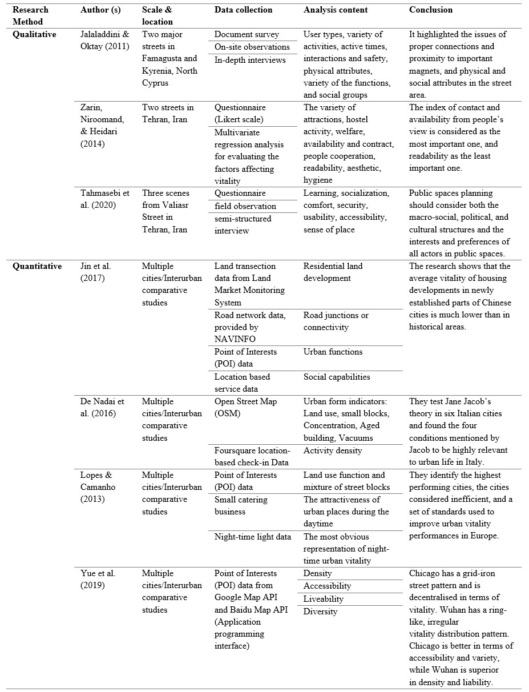A diverse set of indicators serves as the backbone of both qualitative and quantitative urban vitality measurements (Table 2). Qualitative data typically express micro-scale economic, social, and cultural features, such as user types, active times, social functions, welfare and safety, aesthetics, comfort, hygiene, and the "sense of place" (Zarin, Niroomand, & Heidari, 2014; Tahmasebi et al., 2020). Quantitative data covers a wide range of geo-demographic and socio-economic dimensions, from population density to land prices (Jin et al., 2017), bank card transactions (Kim, 2018), and small business services (Ye et al., 2017). It also measures accessibility and location (Li et al., 2022) and morphological features including block type, building ages and heights, road junctions, and street width (De Nadai et al., 2016; Long and Huang, 2019).
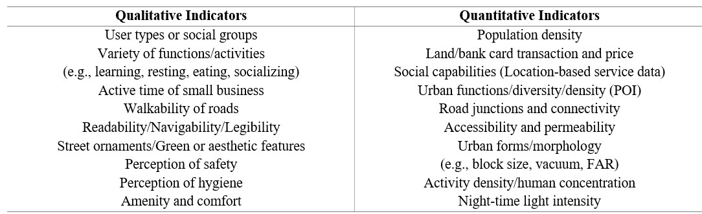Multisource big data, such as point-of-interest (POI) data, social media check-in data, and collaborative website data, are typically used to support quantitative analysis for their precise scale, high validity and accessibility, rich dimensions, wide coverage, and stable location updates (Li et al., 2021). Among the emerging data forms, POI data have been used to address research questions related to the owners and users of urban facilities, the connotation and changes in location information, and various human activities including recreation, employment, mobility, innovation, tourism, and wayfinding (Psyllidis et al., 2022). Compared with traditional parcel-level land use maps, land use estimates based on POIs tend to produce finer-grain and richer disaggregated information about spatiotemporal human activities (Jiang et al., 2015).
The superiority of POI data entails its wide usage as a proxy for "land use" in urban vitality research, where POI have been employed to evaluate land mix use (Lopes & Camanoho, 2013; Yue et al., 2017), urban functions (Jin et al., 2017), facilities (Li et al., 2022; Wu et al., 2021), accessibility (Yue et al., 2019), liveability (Zeng et al., 2018; Long and Huang, 2017), and small (catering) businesses (Ye al., 2017). These studies often deconstruct the connotation of POIs into multiple indicators to assess the density, richness, orderliness, and evenness of urban land use (Table 3). A numeric result of "land use diversity" was generated as a composition of these indicators and proved to be positively correlated to urban vitality.
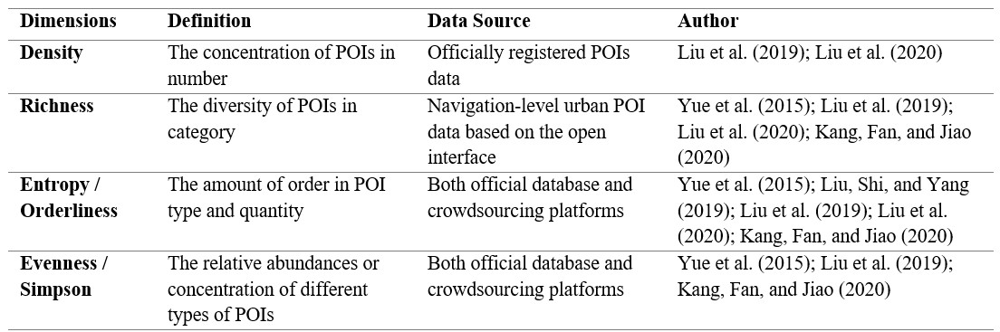Qualitative studies have yielded valuable insights into the perceptions, behaviours, motivations, values, needs, and experiences of everyday users and actors involved in the shaping of public spaces (Pugalis, 2009). However, their geographic scope and analytical content are insufficient for conducting large-scale investigations, particularly in occasions with limited time and resources (Li et al., 2022). Methods such as preferential analysis and field observation can only sample the people within confined geographic locations, which has been criticised by many scholars as lacking supporting methodologies on a larger scale or failing to involve other urban systems (Zhou, 2012, p. 388). Without adding a rich variety of big data, it is hard to generalise the research findings into citywide conclusions or apply them to a different geographic setting (Ye et al., 2019; Ye, Li and Liu, 2017).
Admittedly, quantitative studies have provided evidence-based and systematic urban vitality measurements on a larger scale. Despite their interdisciplinary nature and expansive geographic scope, these studies were typically designed to detect citywide, regional, or even national patterns, leaving street- and neighbourhood-level vitality studies as an unexplored field of study. As to the big data itself, the lack of quality control, infrequent updates, loss of granularity in the process of aggregation, and methodological mismatches between social and data science have posed great threats to the validity of the research outcomes, compounded by mass enterprises and the high costs required for the installation and deployment of ground-based monitoring devices (Arribas-Bel, 2014).
Qualitative approaches are increasingly introduced to supplement the quantitative methods or to evaluate the accuracy, reliability, and adaptability of the quantitative results. These include on-street user surveys, interviews with appropriate professionals, landscape perception-based interviews, street walking and photo-taking, and hanging around with wearable sensory devices (Pugalis, 2009).
For instance, Zhou (2012) conducted a multi-scalar spatial analysis to compare the urban vitality of Dutch and Chinese New Towns. This research employed space syntax to identify street morphology and functional compositions from the top down, assisted by fieldwork observations to understand the distribution and design of spaces from the bottom up. The statistical surveys, supported by observation evidence, by Pakoz, Yaratgan, and Sahin (2022) corroborated that the urban character in several Kayseri neighbourhoods contradicted Jacobs’ argument for mixed use. Aiming to identify the impact factors of street aesthetics, Feng, Zou, and Wang (2022) conducted a mixed-methods evaluation to test the Five Elements of a High-Quality Built Environment (5D) theory model. The photo-oriented interviews designed to gather subjective opinions on the visual aesthetic preferences of streetscapes were supplemented by multisource data and deep learning methods. Even for those studies completely relying on quantitative methods, Google Maps street view (Liu, Jiang, and He, 2021; Li et al., 2022) and night-time light images (Lopes & Camanho, 2013) usually serve as useful qualitative materials.
In this paper, "urban vitality" refers to the degree and intensity of human-environmental interaction. The following methodological innovations are proposed in response to the gaps in the current literature as an organic combination of macro- and micro-scale analyses: This study adopted a sequential explanatory scheme to deconstruct the notion and components of dynamic urban spaces from both quantitative and qualitative perspectives. Four phases comprising the conceptual framework are shown in Figure 3.1: expert evaluation, ArcGIS analysis, area selection, and field observation. 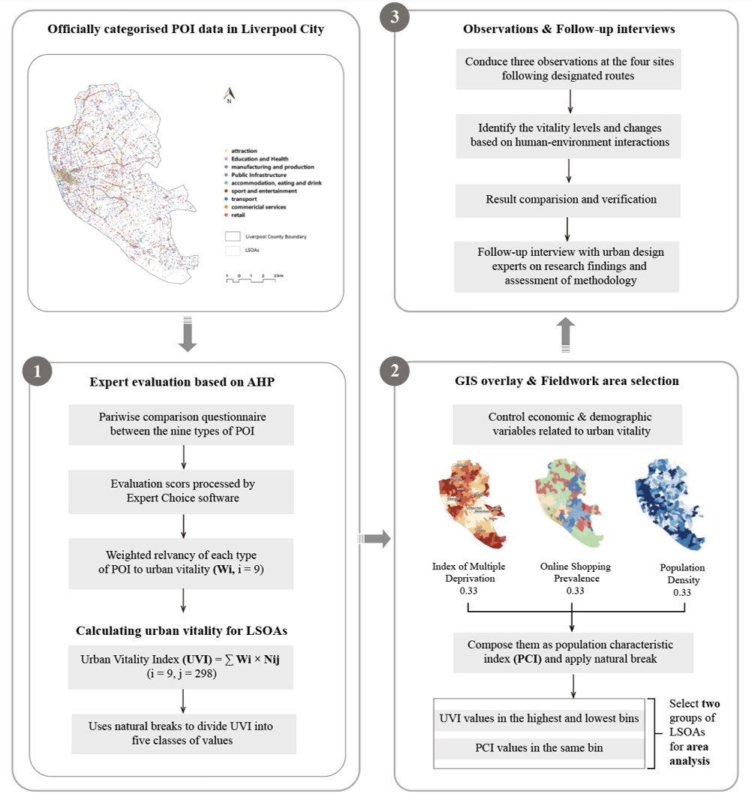
In this study, POI data serves as a proxy for urban vitality. Generally, POI data derives from two types of sources: crowdsourcing platforms and big-tech firms (Psyllidis, 2022). Although volunteer-based geographic information (VGI)-based POIs can best generate a nowcasting, "always-on" open-source observatory of human activities (Lazer and Radford, 2017) and can be readily auto-categorised (Liu and Long, 2015), there have been significant problems such as data completeness, correctness, and taxonomy (Yue et al., 2015). Thus, the POI dataset used in this analysis is provided by Ordnance Survey (2022), an officially registered product with a three-hierarchy classification scheme. As systematic and intuitive design of POI classification is essential for POI data use for urban research (Jiang et al., 2015), the Level 1 nine groups of POIs (Table 3.1) were selected as the study materials. Adopting the broadest and simplest POI categorization allowed for an appropriate level of detail while also avoiding dealing with too much complexity in later pairwise comparisons (Chapter 3.3.1.). Regrettably, this study did not exclude services marked as "permanently closed" on Google Maps from the dataset.
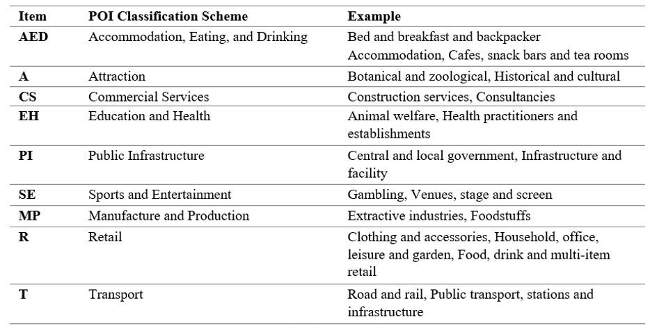
Apart from POI data, all the location-tagged quantitative data were retrieved from online databases, using NUTS-3 Liverpool County as the boundary and LSOAs as geographic containers. Street images and writing notes used for qualitative analysis were collected by the author during the site visits. The data contents, collection methods, data sources, and usages are detailed in Table 3.2.
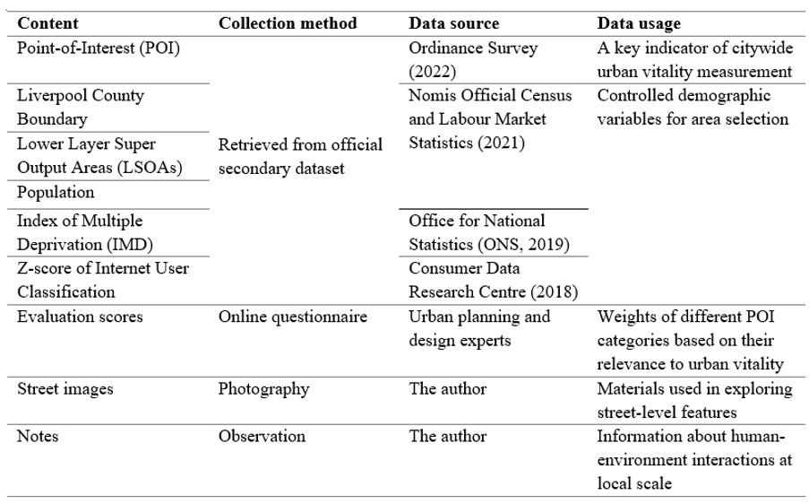
According to Bryman (2012, p. 605), researchers must assign numerical codes to non-numerical data to make them comparable for statistical analysis. To achieve this, this study used AHP as a multi-criteria evaluation tool for breaking down complex problems through a process of constructing decision hierarchies, producing pairwise comparison matrices, and determining the relative weight of each element (Russo & Camanbo, 2015). This study adopted the combined package of AHP and Yannp software to generate an integrated set of weights for the nine categories based on their relevance to urban vitality. Through this method, this study converted the non-numeric POI categories (as Awad & Jung, 2022 denoted, the qualitative factors) into varying degrees in relation to urban vitality from -8 to 8 and remapped the weights into a defined interval from 0 to 1.
The AHP evaluation required the involvement of multiple experts for pairwise comparison. The researchers invited in total 60 professionals in the Urban Design Group (UDG), private design firms, public research agencies, and universities via a mailing list. Three individuals from three different institutions agreed to participate voluntarily. Despite the limited number of participants due to time and budget constraints, efforts were made to diversify the group to ensure comparable and comprehensive results. In the Expert Evaluation Form, the experts were asked to indicate their extent of preference on a scale from equal (0) to extreme (-8/8) by ticking the appropriate cell (Table 3.3 and the appendix). Due to the challenge of gathering multiple experts with differing preferences, expertise, and status to reach a consensus in a group discussion, the researchers synthesised three experts' individual judgments into a single dimension through mathematical methods (geometric mean) in the YANNP software (Lee and Chan, 2008; Kwatra et al., 2021).
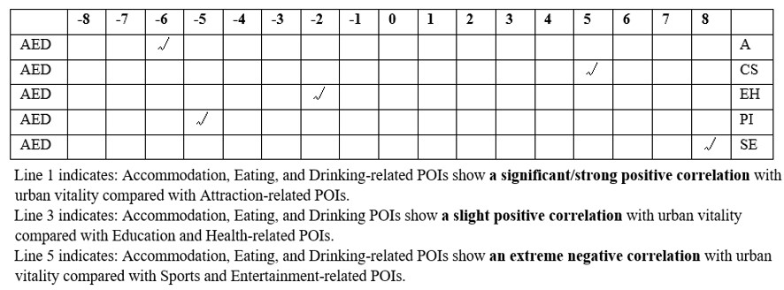
Upon receiving the email responses, the author proceeded to entre three sets of pairwise comparison scores into the digital matrices. The Wi, expressing the weight for each decision objective (i), was used to build a single-hierarchy decision model, with the nine POI categories serving as control layer schemes (Figure 3.2). The Analytical Network Process (ANP) in YANNP - a generalisation of AHP that provides real-time feedback to adjust weights and avoid the rank reversal problem and criteria independence (Ishizaka & Labib, 2011) - automatically corrected any incoherent assessment matrices when the author manually inputted the assessment scores. Then, the group decision algorithm in YANNP helped merge the Wi with equal priority weights given to each expert. This also optimised the group decision weights by minimising the psychological factors that may affect decision-making, while still retaining as much of the original data as possible (YANNP, n.d.).
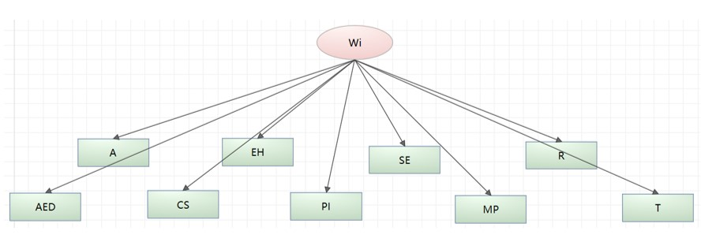
The numbers of each type of POI data contained within the 298 Liverpool Lower Layer Super Output Areas (LSOAs) were recorded as Nij. By multiplying the weights (Wi), urban vitality level for LSOAs can be expressed as:
Urban Vitality Index (UVI) = ∑▒〖Wi × Nij 〗 (i = 9, j = 298)
According to Smith, Longley and Goodchild (2007), natural breaks classification (Jenks) is the optimal method to group similar values together by creating class breaks at the boundaries where data values vary significantly. Quantiles or equal interval classification might place dissimilar values in the same bin or give outliers more weight if the POI data is skewed (e.g., greater density in the city centre). Therefore, this analysis used natural breaks categorisation to auto-divide UVI value into five classes. The results can represent overall patterns of urban vitality in the City of Liverpool.
The above results set conditions for case study area selection. Three variables with a significant impact on an area’s vitality—population density, the Index of Multiple Deprivation (IMD), and online shopping prevalence—were taken as controlled factors to ensure the discrepancies in urban vitality are primarily relevant to UVI (Roig-Tierno et al., 2013). By assigning them equal weight, the three indicators were composed into one dimension and expressed as the Population Characteristic Index (PCI) (Figure 3.3).
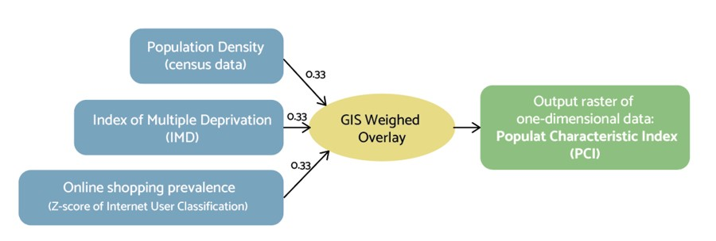
Natural break classification was applied to divide PCI values into five bins. To ensure the sufficiency and representativeness of observation results, three streets most indicative of the vitality level in their respective LSOAs were selected for detailed case studies, based on the following principles:
1) The three areas have relatively good accessibility, permeability, linkage with the whole city, as well as diverse sets of POIs for analysis. For example, we favour mixed-use districts over residential areas where POIs are scarcely distributed.
2) Their UVI values should fall in the first three intervals marked by “high”, “medium high”, and “medium”.
3) Their PCI values should fall in the same higher-than-medium category, as a higher concentration of population helps ensure the presence of sufficient human activities for the researcher to identify and record.
4) The three areas are adjacent to each other. This not only allows the author to conduct continuous observation and estimate the whole from segments, but also avoid variations in urban vitality due to geographic locations.
5) As a primary carrier of traffic and individuals’ daily activities, streets can be a representative morphology for observation surveys (Liu, Jiang and He, 2021). The three selected areas are streets with the biggest number of POIs distributed on both sides, a similar length, and used by both vehicles and pedestrians (considering the vitality of the pedestrian zone is comparably higher).
Field observation allows researchers to create a continuous and up-to-date profile for a particular area and directly link the theoretical distribution of spatial vitality "on the map" to the human perception of street vitality "on the ground” (Zhou, 2012; Pugalis, 2009). In comparison to remote sensing technologies, it is less expensive and more effective to add a spatiotemporal dimension to data (Ye, Li and Liu, 2017).
The researcher conducted a total of six observations on three designated streets, three times in the afternoon and another three times in the evening (the evening tour is scheduled between 8 and 9 p.m. for safety concerns). Due to the interference of the climate and social circumstances with human activities, all the fieldworks took place on sunny weekdays in mid-April and avoided events and festivals. The interpretations were produced in combination with mobile-phone-captured images of the street, with a concentration on:
As Diener & Crandall (1978) set out, social research design should avoid deception, harm, privacy invasion, and lack of consent. This study conformed to all statutory requirements set out by the University of Liverpool (2018) and seek approval from the Committee on Research Ethics. The researcher promises:
Two urban design practitioners and one professor completed the pairwise comparison. Table 4.1 displays the average weight (Wi) assigned to the nine types of POI based on AHP and the YANNP software group decision. Wi is a numeric proxy of the correlation between urban vitality and the nine POI categories. Retail (R), Transport (T), and Attraction (A) are considered the top three POI types that bring the highest urban vitality, while Manufacture and Production (MP) is regarded as the least conducive types (Figure 4.1). Moreover, MP obtains the minimum standard deviation of only 0.0101, and relatively smaller standard deviations have been noticed in the two POI categories (R and T) considered most conducive to urban vitality (Figure 4.2).

Figure 4.3a reveals the Urban Vitality Index (UVI) pattern of Liverpool. The distribution of POIs follows a pattern along the streets, with a concentration of high-vitality POI types near the port area and an increasing trend from the southeast hinterland to the northwest coast. In the northern midland, there is a mix of medium- and low-vitality regions. Areas along Algburth to Belle Value obtain the lowest vitality due to the homogenous residential use and low Wi-POIs (MP, PI, and CS). Areas A and B display relatively higher UVI values, but a closer examination on Figure 4.3b reveals that this is primarily due to their larger geographic boundaries rather than a dense distribution of POIs. Therefore, areas for observation were selected in LSOAs near Area C.

Figures 4.4(a–c) depict the processes of standardising ("reclassify by layer") the three control variables mentioned in Chapter 3. The resulting citywide PCI values presented in Figure 7d were obtained through a weighted multi-criteria analysis. Figure 4.4e illustrates the remapping of the original range of 0.14–4.95 to the new interval of 1–5, where "5" represents the highest PCI value and "1" represents the lowest PCI value. Based on this categorisation, areas 1, 2, and 3 are locations with similar and higher-than-medium PCI values.
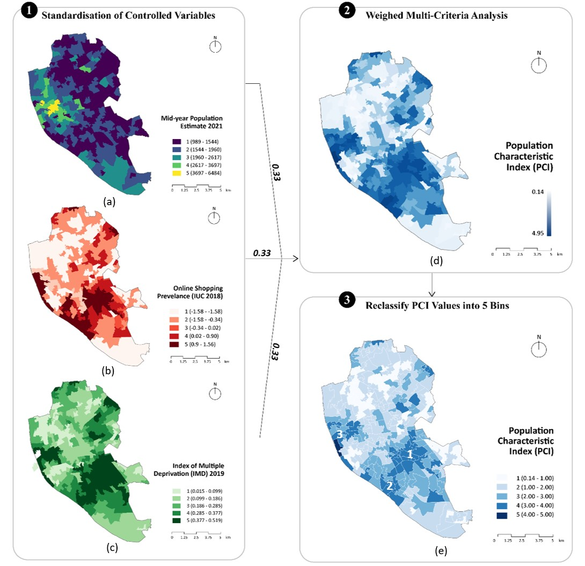Then it compared two groups of LSOAs compliant with the first two principles in Section 3.3.3 (ABC and DEF in Figure 4.5) against the rest of the criteria. Area C, located in closer proximity to the city centre, stands out as the most functionally diverse area in Liverpool with its design comprising permeable blocks and connected streets and the presence of Liverpool One retail complex. Additionally, it provides easy pedestrian access to adjacent LSOAs with varying UVI levels, enabling a unique urban vitality experience over a short distance. Thus, a decision was made to choose ABC over DEF. According to the last principle, the study narrowed down the observation survey areas to three representative streets: Handover- Ranelagh St., Rodney St., and London Rd - Pembroke Pl (Figure 4.6). These streets bear similar features, such as a length of 500 to 600 meters, the highest density of roadside POIs distribution, and the capacity to accommodate both pedestrians and vehicles. 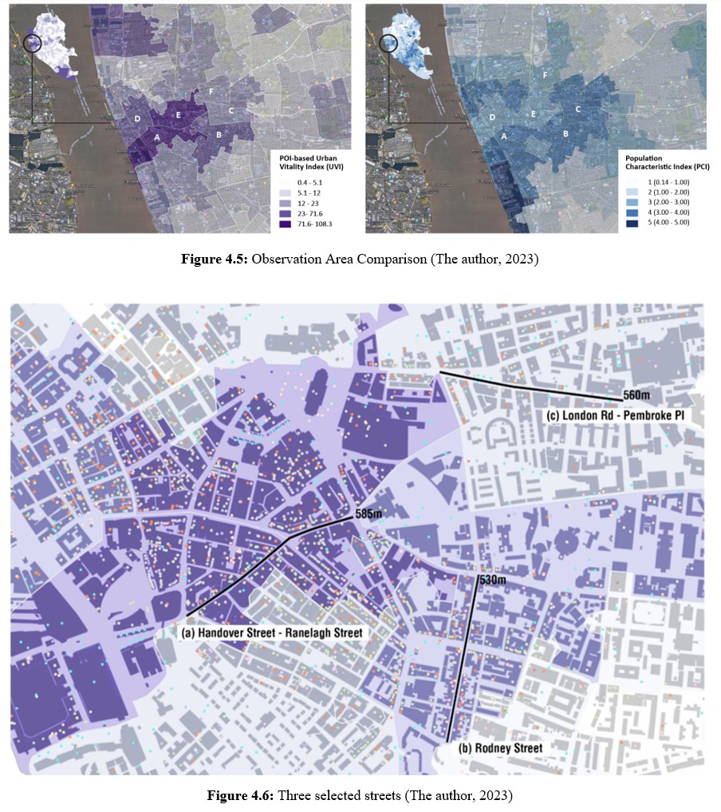
This part is focusses on the three selected streets, respectively representing high concentration of high-vitality POIs, high concentration of low-vitality POIs, and a contrasting pattern of POIs. Based on the notes and photos taken from observational surveys, this section investigated the perceived characteristics of urban vitality through street activities, human-environment interactions, and the changes within a day. With the results compared to the previous citywide analysis, it determines the degree of alignment between the real-life and the theoretical distributions of urban vitality.
Located in the heart of Liverpool’s bustling city centre and within walking distance to major tourism attractions (e.g., St. George’s Hall, the Liverpool Empire), Handover–Ranelagh St serves as the major commercial strip in Liverpool, the core of the city’s tourist industry, the most popular gathering point for shoppers and diners, and a historic legacy of cultural significance. It can be inferred from Figure 4.7 and the UVI map (Figure 4.3a) that:
The results of the observations align perfectly with the findings of the analysis. The major retail destination is Liverpool One shopping complex, the largest shopping complex in Liverpool hosting a full range of high-street and designer stores. Handover St. is home to several historic architectures, which have been refurbished as hotels, bars, or anchor stores and reopened to both visitors and locals. As the entrance of Church Street, Ranelagh Street is more pedestrianised, with numerous small multi-item retailers, fast food restaurants, cafes, and bars. The street also plays a key role in Liverpool’s public transport with multiple bus stops, the Liverpool One Bus Station, and the Liverpool Central Railway Station.
The design of the buildings on the street allowed for multiple uses, resulting in a diverse range of human activities taking place on the sidewalks. Pedestrians moved at a fast pace while engaging in conversation, bringing a constant sense of mobility and vitality to the street. The sidewalk was bustling with activity, as depicted in Figure 4.8a, with people making phone calls, chatting with friends, and waiting for buses (b-d). The street frontages were particularly active during mealtimes, as local specialty restaurants and fast-food chains offered extensive outdoor seating areas (e, f). As almost all the shops remained open until midnight, the street attracted many young people, cyclists, and night runners. With the increasing crowds and musical performances in the evening, bars and fast-food restaurants became the liveliest hotspots (g). The Handover Street became relatively quiet, with nightlife activity being concentrated in the Ranelagh St, particularly with the continual influx of people from Liverpool Central Station (h).
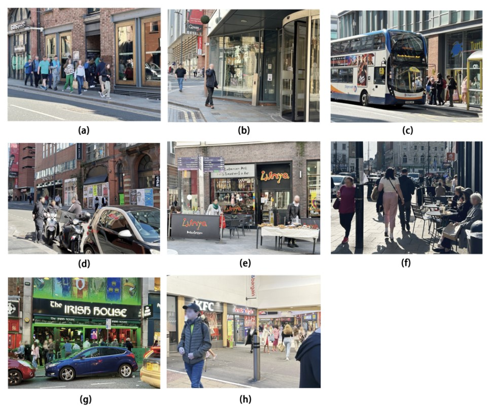
The diverse range of street users was evident in Figure 4.9i, which included shop customers, young couples, university students, families with kids, and the aged population. Local seniors tended to gather around Ranelagh's Tavern, Five Ales, and the Irish House (j). The presence of gambling venues, stages, and screens also attracted skateboarders, artists, and musicians (k). Notably, brightly dressed individuals appeared on the street around 6 p.m., likely due to the close proximity of the opera house (l). Homeless individuals were also present, which served as a testament to the street's high level of vitality (m, n).
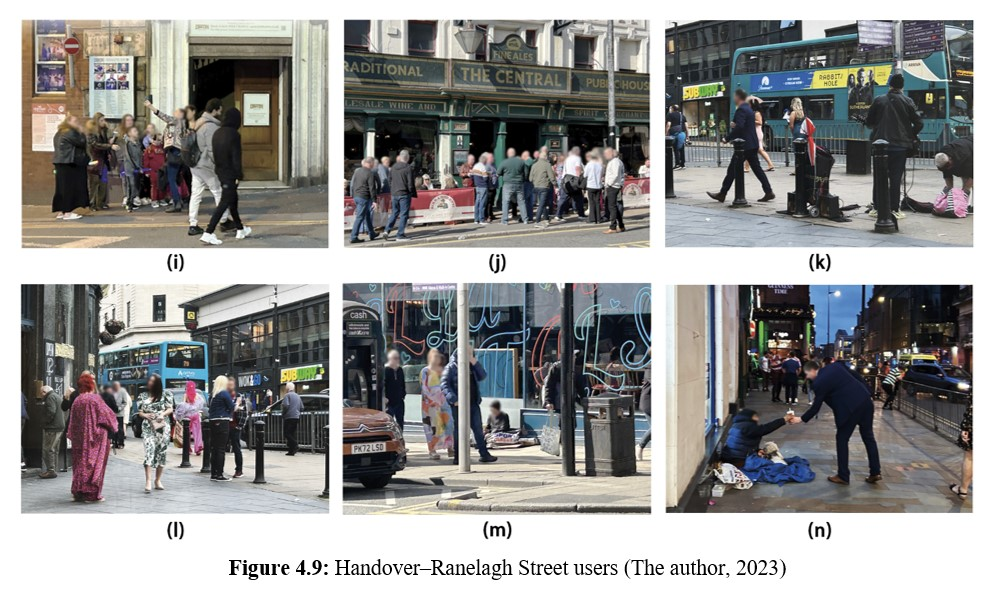
Situated in the Georgian Quarter, Rodney Street is the base for numerous distinguished medical practices in Liverpool. With exceptional architectural designs of the Georgian townhouses and outstanding conservation efforts and a history tracing back to the Battle of the Saintes in 1782, this street serves as a node connecting local educational and memorial destinations. It can be inferred from Figure 4.10 and the UVI map (Figure 4.3a) that:
The findings of Case 2 have yield unexpected results that challenge previously held assumptions. Specifically, this case demonstrates the lowest level of vitality among the three cases studied, which has led to a re-evaluation of the factors that contribute to vibrant public spaces.
Upon closer examination, it became apparent that the street's potential users were relatively homogeneous, consisting primarily of individuals seeking legal or medical assistance and lodgers. This lack of diversity in users proved detrimental to the vibrancy of the street, as it failed to attract a broader range of social groups. As seen in Figure 4.11a, despite the presence of more than 20 medical POIs, including plastic surgery clinics, dentists, psychologists, and clinics, there were no visible interactions between medical staff and patients at the street interfaces or frontages. This lack of interaction further contributed to the street's low level of vitality, as it failed to foster a sense of community and social connection among its users.
These findings contradict the commonly held hypothesis that the concentration of low-Wi POIs would lead to high levels of aggregate vibrancy in the public realm. In fact, the street saw more foot and bicycle traffic towards its ends (b), primarily due to people passing through to reach other destinations, such as the city centre, John Moores University, and the LIPA Primary School. While the concentration of educational facilities did result in increased pedestrian and car traffic during off-school times, the street remained relatively quiet both day and night (c). This was evidenced by the fact that only ten pedestrians were observed walking on the street in a 20-minute observation conducted near the school.
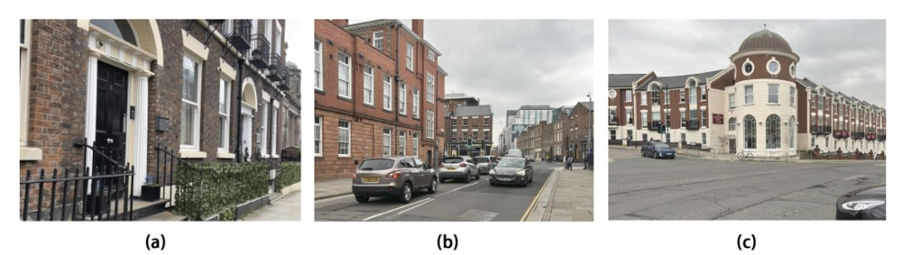London Road-Pembroke Place runs through the area of Knowledge Quarter, serving as a hub for public transport with multiple bus routes providing mobility from the edge of the city centre to the suburb of Kensington. With the well-known Pembroke Dock adding to its historical significance, the street is home to several university buildings, hospitals, and research agencies with institutional significance. It can be inferred from Figure 4.12 and the UVI map (Figure 4.3a) that:
The observation results partially correspond with the analysis findings. The main inconsistency lies in the fact that it obtained a higher vitality level than that of Case 2. Furthermore, despite a higher number of commuters and shop customers on London Road, there was no significant difference in the level of human-environment interactions between the two sections.
Indeed, the number of passers-by on London Road significantly surpassed those who stayed or entered the buildings (Figure 4.13a, b). We carried out a 20-minute observation at two locations to prove this assumption: 1) the street shops near the intersection of Daulby St. and Pembroke Pl., and 2) Monument Place Square. During the first observation, no pedestrian entered the stops during this interval except one using the ATM; at the second site, only two individuals used the seats in the square (c). Interestingly, TESCO, located at the second site, was found to be the most frequently visited store, with 14 individuals entering it. Although retail POI represents high vitality, shopping activities inside this type of supermarket chain did not contribute to the vitality of the street.
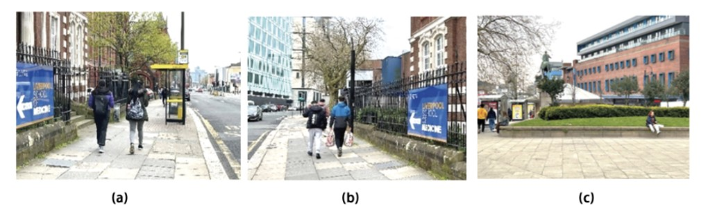The entire street gave the impression of being “passed through” rather than being "used." Street activities were quite limited, and the only purpose for which the observed people stayed on the street was to wait for buses. Because of the dominance of EH-related POIs, the street users were primarily university students and hospital patients. Compared with the other two sites, there was also a dominant population of ethnic minorities and low-income workers, such as cleaners and wall painters, likely due to the existence of low-end construction, contract, repair, and recycling services. The street shops proved unattractive to most customers. It was observed that many pedestrians carried shopping bags from Lidl, indicating that the street was frequently used as a quick pass rather than a lingering place. As night fell, the streets were almost empty of pedestrians, with bus stops, squares, and parking lots completely vacant (Figure 4.14). Significantly, most retailers closed before 8:00 p.m., of which one-third closed at non-holiday 2 p.m. Street lighting was insufficient, and the low publicity of the building facades added to the intense feeling of unease and insecurity. Overall, the night-time scene was eerily quiet and unsettling.
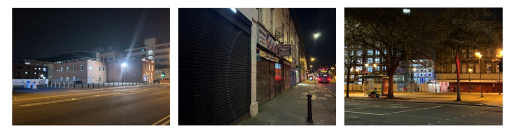
Previous discussion reveals a general coherence between the conclusions drawn from the quantitative and qualitative analyses. The fact that Area 2 has the lowest UVI is considered insufficient to support the claim that the hypothetical UVI map is inconsistent with reality, as it is inappropriate to assess the overall vitality of a region based on the heterogeneity of specific elements within it. This could be a consequence of different principles applied to UVI calculation and area selection: the UVI was established on both weights and counts within the entire LSOA, whereas the area selection was based on a subjective perception of POI density. However, the results still pointed to two notable mismatches, specifically:
To address these issues, the next section delves into the multi-dimensional effects POIs have on urban vitality, the synergies resulted from the concentration of high-Wi POIs, the scheme used for POI categorisation, and other quantitative and qualitative indicators that distinguish high-vitality urban streets from low-vitality ones.
POI Categories: Regions with ample retail, transportation, and attraction options exhibited a comparatively higher level of vitality, which aligns with the expert evaluation opinions: Consumption activities typically take place in areas with a high concentration of leisure, catering, and multi-item retail facilities; road and rail junctions, transit stations, and key infrastructure nodes are often places for a constant influx of people and goods; historical and cultural landmarks, botanical gardens, and zoos could potentially become tourist hotspots and venues for local artists. Moreover, Case 1 also demonstrates the highest “liveability” in the DALD model (Zeng et al., 2018), with the biggest number of banks, food services, and destinations for leisure and recreation contributing to its urban vitality.
On the contrary, industries and public establishments usually have coarse urban fabrics with inadequate connections to public roads, and they are mostly privately owned, open to restricted groups with specific rights, and host most activities within the enclosed spaces, resulting in relatively limited human-environmental interaction in the public realm.
POI Density：If we redesign the area selection criteria, such as conducting fieldwork on three streets falling within the "high," "medium," and "low" intervals of UVI instead of choosing three adjacent bins ("high," "medium-high," and "medium"), the observed results would be more cogent with GIS analysis. This assumption can be evidenced by the fact that areas with the lowest UVI were predominantly residential and would naturally have lower street vitality compared to commercial and mixed-use districts with the highest UVI. Connecting the area selection criteria in relation to global conformity and local non-conformity, these results posit deeper insights into POIs density. It can be inferred that, on a broader and coarser scale, POIs have a fundamental influence on the distribution of urban vitality across a city as they impact the density of social functions and location-based land use (Psyllidis et al., 2022; Jiang et al., 2015). Thus, researchers can gauge the overall vitality of an urban area by examining its uses and functions through POI data. This finding is consistent with the widely accepted notion that POI density has the greatest impact on urban vitality (Huang et al., 2019; Liu, Jiang, and He, 2021; Li et al., 2021) and the positive correlation between "supportive land development" and the creation of lively urban environments (Yang, Cao, and Zhou, 2021).
POI Diversity：We can also infer that land use and function alone are insufficient to fully understand the nuanced differences in urban vitality. Richness, orderliness, and entropy—the other three fundamental dimensions of POI—have all received considerable scholarly attention, but the this analysis had a sole focus on the "weighed density" of POI (Chapter 2.1.3). According to Yue et al. (2017) and Xia, Yeh, and Zhang (2020), compared to delivering a mix of POIs, the contribution of POI density to neighbourhood vitality is minimal (only 1%). Their studies can be used to illustrate why Case 2 has a lower vitality level than Case 3: the latter comprises a variety of complementary POIs, whereas the former is dominated by the EH and CS. Regarding the necessary conditions for land use mix, Liu et al. (2019), Liu, Shi, and Yang (2019), and Liu et al. (2020) describe it as "proper and orderly mix with less randomness," and Kim (2020) relates it to "balanced land use arrangement". Comparing Figure 5.1a to b, the disposition of functions in Case 3 could be less predictable. Therefore, the existence of high-Wi POIs in Case 3 is less likely to bring as much street vitality as in Case 1, where the POIs are distributed in a much-ordered pattern.
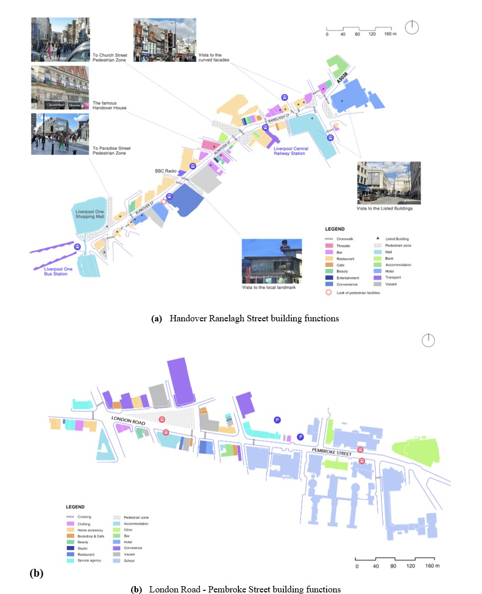
Kang, Fan, and Jiao (2020) regard urban vitality as more strongly associated with a combination of activity, time, and space diversity (attracting people from different districts). Out of the three cases analysed, Case 1, which stands out possessing all three types of diversity, is more vibrant than Case 3, which has only activity and space diversity, ranks in the middle, while Case 2, with none of these diversities, obtains the least vitality.
Synergistic Effects of POIs：It is worthwhile noting that the synergistic effects generated by functional mix may contribute to urban vibrancy in a non-linear way. Synergism means that collaboration or interaction between the components usually causes a greater overall effect than the aggregated individual contributions (Corning, 2003). In Section 3.3.2, we assumed UVI as the aggregated values of the weights of individual POIs. This may underestimate the UVI in Case 1 while overestimating it in Case 2. Bertolini (1999) proposed the "node-functionality-place" theory, arguing for mutually beneficial relations between transport facilities, walking environments, and land development. Xiao et al. (2021) used this theory to explain why certain types of POI configuration are more pertinent to a higher vitality level, such as the agglomeration of retail and shopping destinations (Psyllidis, 2022). For example, in Case 1, a shopping mall located nearby a small pedestrian garden with food supplies can provide numerous leisure and entertainment opportunities beyond shopping itself and dramatically boost the area’s vitality. While in Case 3, a bus stop next to several health agencies may obtain similar UVI on the GIS map, they are less likely to attract a similar amount of footfall in the actual situation.
Frontage Types and Economic Activities: The observatory results align with Zhou’s (2012) findings that the mixture of diverse commercial, cultural and recreational programs widely dispersed on street frontages is conducive to urban vitality. In Case 1, all-day activities and events create “experiential landscapes” at the street interface (Pugails, 2009). Through the semi-open facades of the bars, pedestrians could catch a glimpse of the interior environment (Figure 5.2a). The band’s music was heard from the street, and the pedestrians waved their arms to the beat and rhythm. Some shops applied transparent facades, and some installed LCD screens projecting images to enhance the visual connection to the street (b). When the night fell and the relationship between interior and exterior reversed: the internal spaces and semi-open environments turned into perfect viewing points of the street activities (c).
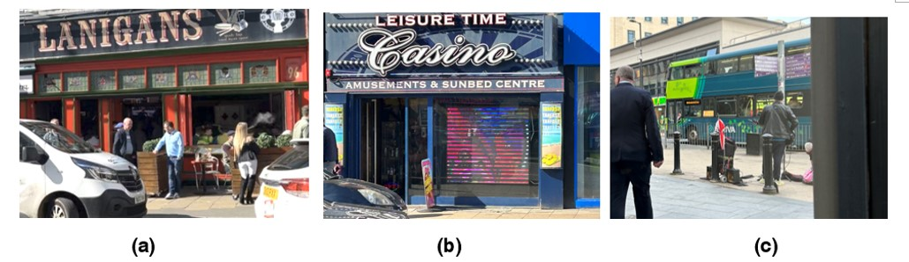
The level of service facilities profoundly influences social interactions, commercial transactions, and cultural exchange, all of which relate to socio-economic vitality (Li et al., 2021). The absence of night economy may hamper the continuous occurrence of human activity – a crucial dimension to the “24h vitality” (Montgomery, 1995; Yue et al., 2019). Therefore, a lower vitality in Cases 2 and 3 was partially attributed to the continuous inactivity of street frontage types, including car parks, vacant or closed stores, interfaces with low transparency and publicity, underutilised spaces, fences, and walls.
In Case 3, a significant amount of space had been occupied by parking lots (roughly 850 sqm next to the LSTM building; Figure 5.3a) and by vacant retailers (30%–40% in terms of total vacancy per sqm, b). The street shops were unappealing due to a lack of visibility from the street. Although there was a public seating area provided by Cu Café, the seats were quite limited, and it was far from enjoyable eating with flows of people and vehicles quickly passing by (c). In Case 2, the gardens were enclosed and fenced off from the street, with walls extending up to 50 metres in length (d), creating a clear segregation between the public and private spaces. In Case 1, a long section of Turnover St. with lower vitality was characterised by negative street frontage, vacant shops, and underused spaces (e).
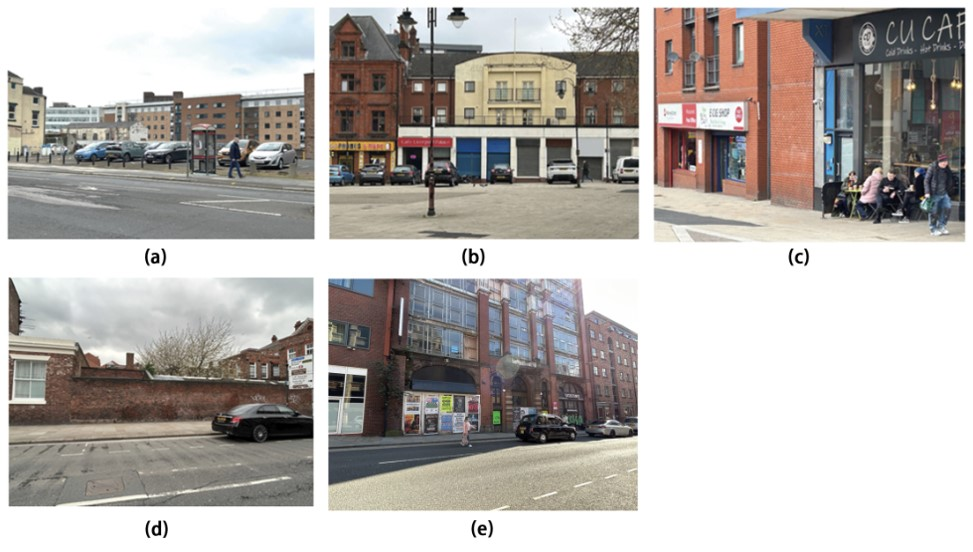
Appearance and Design: The distinct local character and unrivalled aesthetic values in Case 1 laid the foundation for its high vitality level. As noted by Yue et al. (2019) and Jacobs (1961), the juxtaposition of ancient and modern buildings constituted an appealing environment that motivated cultural diversity and the concentration of human flow. There were in total 13 Grade II-listed buildings, ranging from the former Handover House to the Ranelagh House. Cullen (1961) introduced the notion of "sense of place", highlighting how street aesthetics could create a distinct ambiance in a location and draw people to it. This was exemplified in Case 1, where its unique topography, diverse building facades and materials (Figure 5.4), permeable urban forms, and visual connections to local landmarks made the site highly legible and visually appealing. Green features and delicate street ornaments injected the public-private interface with more vibrancy (Ye et al., 2019; Liu, Jiang, and He, 2021). The streetlights were turned on before dusk, and the colourful decorative lights made the night-time environment safe and vibrant (Figure 5.5).
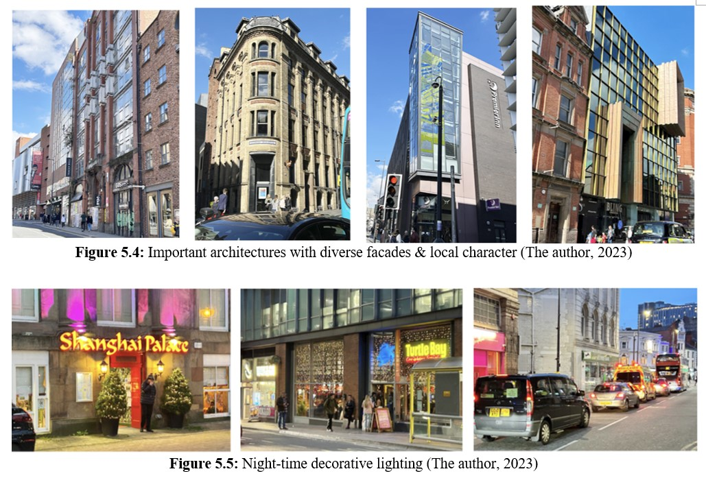
The building styles in Case 2 were predominately Victorian Gothic, and the materials were homogenous red bricks. Despite being in good condition, the lack of diversity and place character had negatively affected its urban vitality level. Although Case 3 had a mix of modern buildings and traditional red-brick landmarks (Figure 5.6a, b), most buildings obtained large footprints disproportional to the street scale; thus, the contrasting architectural styles and heights only created discontinuities and vacuums in the streetscapes (c). The bronze sculpture in Monument Square was not legible and in poor condition. The lack of street furniture and undesirable vistas combined to diminish people’s willingness to stay (d).
In both cases, there were dilapidated building facades (e), scaffolding structures (f), and garbage and dirt that affected the street hygiene (g-i), all of which together discouraged people from staying on the street or entering the buildings.
Street Characteristics: Street hierarchy and width, block size, intersections, and roadside plazas also affected urban vitality (Long and Huang, 2017; Liu, Jiang, and He, 2021; Li et al., 2022). Appropriate building height and height-to-width ratio have been positively associated with urban vitality (Montgomery, 1998; Xu, Mi, and Wang, 2021), which gives the reason why Case 3 obtained less vitality than Case 1 (the four-lane carriageway was 5 m wider and the buildings were lower than in Case 1). Another reason for Case 2’s low vitality could be its status as a secondary road with fewer intersections and thus larger block sizes (Ye, Li, and Liu, 2017). In contrast, Cases 1 and 3 were primary roads directly connecting to highways A5052 and A5038, divided by multiple intersections into smaller urban blocks. Additional features in Cases 1 and 3 included the presence of public squares, which were conducive to pedestrian concentration as they formed a focal point for public activities such as social interaction, commercial transactions, refreshment, and contemplation (Lopes and Camanho, 2012).
The new urbanism design guideline highlights that pedestrian-oriented streets tend to foster more interactions between buildings and street activities (Katz, 1994; Yue, Li, and Liu, 2017). In the three non-pedestrian streets studied, the intensity of human activities and movement was negatively impacted by fast traffic. These issues included limited sidewalk width (Figure 5.7a), long distances between pedestrian crossings, traffic congestion at intersections (b), lack of bike paths and other pedestrian facilities (c, d), insufficient roadside dropping areas leading to haphazard parking along the sidewalk (e), and direct vehicle access to the pedestrian path in front of the Monument Place Plaza in Case 3 (f), all of which posed significant safety concerns for pedestrians. These results appeared similar to Liu, Jiang, and He’s (2021) and Pikora et al.’s (2002) findings that streets designed for fast traffic are less attractive to pedestrians.
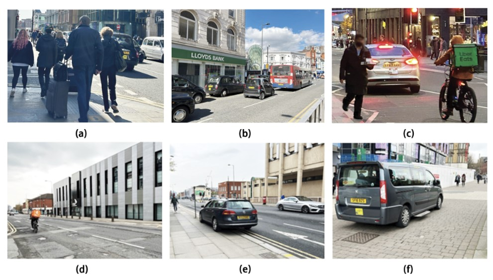
A limitation in the methodology is manifested by issues of POI updates and matching (Psyllidis et al., 2022). As the Ordnance Service requires months to undergo the review programme and years to conduct traditional land surveys (Ordnance Survey, 2022), the current POI product failed to provide the most accurate and updated data. Frequent updates entail higher costs compared with crowdsourcing technologies for data collection, and uncertainties in data quality, rework in organisations, and the lack of public participation may trigger substantial inconsistencies between the ideal and actual situations (Naghavi et al., 2022; Misra et al., 2014). As to data quality issues, although most records are positioned at the location within the building footprint, 10.8% of the records are non-addressable POIs positioned at an adjacent location, over 25% of which are high-vitality types such as transport and retail (Ordnance Survey, 2022). Besides positional inaccuracy, the ever-shifting landscapes of geo-location, land use, property rights, business ownership, tenancy and vacancy may significantly affect the processes and outcomes of urban vitality quantification. A notable example is that those POIs marked as "permanent close" on present-day Google Maps were counted into the 2022 Ordinance Survey database, leading to a higher-than-predicted level of UVI.
Another limitation intrinsic to the POI dataset is the classification scheme (Psyllidis et al., 2022). While the Level 1 classification scheme is succinct and comprehensive, it is the broadest and most ambiguous categorization that omits important explanatory details, such as their scales, service buffer zones, and active hours. For example, large hospitals and small practitioners are two subcategories of "Education and Health"; "Amusement Parks and Arcades" and "Nightclubs" belong to the same "Sports and Entertainment" group while differing in both human concentration patterns and active hours; the "Retail" group encompasses food, drinks, and leisure activities and is largely overlapped with the contents of "Accommodation, Eating, and Drinking" and "Sports and Entertainment". These exemplify why the expert evaluation displayed a higher-than-expected standard variance in some categories, as well as why such a classification scheme might reduce the representativeness of assessment results used for area selection.
The main limitation of the results obtained in this work is related to the AHP and expert evaluation. While conducting the comparisons, Expert 3 (2023) continuously asked for clear definitions and described the metrics as “very subjective"—also a major criticism of criteria-related evaluation in literature for its strong dependence on participants’ professional background, personal and technical knowledge, and ideas on certain disciplines (Ishizaka and Labib, 2009; Munier and Hontoria, 2021). We identified in the questionnaire that Expert 2 tended to give more extreme ratings over 7, while Experts 1 and 3 were more cautious and inclined to produce scores in between 1 and 4. Furthermore, the number of participants was limited, and the decision hierarchy (Figure 2) was designed simply based on the author’s subjective perception (Hartwich, 1999), all of which could lead weights produced by group decisions to be lopsided and partial.
A critical limitation relates to the time-consuming procedures of pairwise comparisons. Even though this study chose the broadest categorization of POI, the experts still needed to complete 45 comparisons in total. One professional (2023) on the mailing list declined this research invitation, saying that:
This aligns with Lockett et al.’s (1986) belief that excessive reflection on problems may lead to a tedious and counterproductive decision-making process, ultimately undermining the quality of expert evaluation.
A critical issue of AHP existed in the loss of the interactive character (Locket et al., 1986). This study simplified the consensus-based group discussion process commonly used in AHP for aggregating individual ratings into the calculation of the geometric mean at the final stage (Anders and Muller, 1995).
The use of PCI as an indicator composited by assigning equal weights to controlled variables could also be problematic. One challenge is the difficulty in determining how much impact factors (population, affluence, and shopping propensity) have on urban vitality.
As denoted by Wrigley et al. (2015), the role of e-commerce in contributing to the vitality and viability of urban areas is still subject to debate, especially during the COVID-19 downturn. Some argue that omni-channel retailers view brick-and-mortar stores as "showcases" for their products or as convenient venues for customers to "click and collect" and substantiate the complementarity of the physical and digital high-street models (Nanda, Xu, and Zhang, 2020), while others suggest that online retail may be driving people away from traditional shopping venues (Pantano et al., 2020). We were not able to distinguish the two situations in this study.
In addition, the study did not control other quantitative indicators related to urban vitality, such as transport (road junctions, connectivity) and urban morphology (FAR, block or plot size, building height). Moreover, the estimated accuracy for nature break classification was 67.4% of quantiles (Brewer and Pickle, 2002), which has been proven to produce responses less than 70% as accurate as quantiles.
The observation tended to focus on regions with medium to high vitality values, and it was not yet known whether low vitality regions followed the same principle. Though the selected regions were deemed to be highly representative, they could not be used to generalise the distribution of vitality across all regions. The observations were limited in scope as they were conducted exclusively during specific time periods on sunny weekdays and in a small number. Given that peak hours of activity might differ across regions (e.g., lunch and dinner times for Case 1, school off times for Case 2, and rush hour for Case 3), there might be a misestimation of the activity levels.
Additionally, the observation surveys focused solely on the physical configuration of the built environment and the author’s subjective interpretations instead of engaging residents, street users, or appropriate experts. This has left many relevant socio-economic aspects remaining unexplored, such as rental prices, employment rates, community ages, etc. (Li et al., 2022).
This research project has sought to test the potential of POI data as an alternative for citywide vitality patterns through a new mixed-methods paradigm. The literature review traced urban vitality from 20th-century placemaking theory to the digital era and presented an overview of analytical materials and methods, with the uses and contents of POI data being discussed. Whether POI data could lead researchers to an accurate estimation of citywide urban vitality was a key query of this research. A mixed-methods framework was put forward as a synthesis of the strengths and limitations of previous studies. Comparing notes and photos taken from observational surveys to ArcGIS analysis, it determined a general congruent trend and two notable mismatches between the real-life and the theoretical scenarios. A critical discussion on the results and methods enabled all the three research questions to be answered.
According to the aforementioned results, POIs are differently associated with urban vitality. Retail, transportation, and attractions typically obtain much higher vitality than destinations for production and warehouses. To some extent, POI density has helped researchers paint a rough picture of urban vitality distribution. Nevertheless, from a citywide to a more refined scale, factors that influence levels of vibrancy have shifted away from the density of certain functions towards more perceptible embodiments of the built environment. For example, an orderly mix of complementary POIs serves diverse demands for different social groups and forms a synergy that dramatically boosts street vitality.
The research results also added to the evidence that, apart from land use-related factors, urban morphology and economic activities have significant effects on urban vitality (Wu et al., 2018). Frontage types, appearance and design, and street characteristics have profoundly shaped the corresponding human-environment interactions in the three cases. The overarching message is: We cannot simply relate the existence of POIs on the map to their effective "use" in reality, therefore knowledge about urban vitality should be gained from both large-scale analysis and local-scale observations.
This project has made notable methodological contributions to the current urban vitality literature. Unlike most qualitative studies, this mixed-methods paradigm allows the researchers to evaluate urban vitality at any given location, as it employs universal criteria to select the most representative study areas within a whole city. Unlike most quantitative research, this study puts greater emphasis on social value, pedestrian movement, and the visual-artistic features of neighbourhood streets and reveals the interrelationship between the physical and social environments. The use of AHP provided an efficient and systematic way to quantify qualitative primary data. The emphasis on representativeness was evidenced in both the morphology and location of the selected case study areas, ensuring they were equipped with sufficient observable information and research convenience. The idea of controlling variables was also present in the whole research design. Nevertheless, methodological flaws still existed in the source and classification scheme of POI data, the procedure and scope of expert review, the problems with GIS manipulation, the inaccuracy of area selection, the subjectivity of fieldwork, and the absence of other qualitative considerations.
There are also major limitations. While it is possible to infer neighbourhood vibrancy and attractiveness from its POI configuration, quantitative methods cannot fully assess the related planning and project management processes. This is due to a nuanced difference in the definitions of "use" and "function" in the context of urban planning. In the UK, "use class" is a planning term that refers to categories such as "B2 General Industrial" and "F1(c) Museums" (Planning Portal, n.d.). These terms are inconsistent with most POI categorization schemes, whether they are VGI-based or officially registered. Furthermore, it is not feasible to apply the mixed-methods approach to evaluate the effectiveness of other types of big data. POI data contains extensive and classifiable details on human activities and land use indications (Wu et al., 2021), while other forms of big data are usually numeric terms. Lastly, despite the many similarities seen between Chinese and British cities, this framework may not scale up to provide rapid responses to urban policymaking in any given city due to the lengthy process of the fieldwork.
For future research, we suggest selecting a more appropriate POI dataset and classification scheme or clarifying classification criteria before conducting evaluations. We also recommend simplifying pairwise comparisons, improving transparency, inclusivity, and participation in the group decision process, and adopting more rigorous standards for variable controls. In the digital era, a more decent combination of qualitative and quantitative methodologies could be one of the potential directions.
Alexander, C. (1979) A Timeless Way of Building. New York: Oxford University Press.
Anders, M.M; Muller, R.A.E. (1995). Managing Communication and Research Task Perceptions Interdisciplinary Crops Research, ln: Quarterly Journal of international Agriculture, Vol. 34, p. 53-69
Arribas-Bel, D. (2014) “Accidental, open and everywhere: Emerging data sources for the understanding of Cities,” Applied Geography, 49, pp. 45–53.
Awad, J. and Jung, C. (2022) “Extracting the planning elements for Sustainable Urban Regeneration in Dubai with AHP (analytic hierarchy process),” Sustainable Cities and Society, 76, p. 103496.
Banzhaf, E., Grescho, V. and Kindler, A. (2009) Monitoring urban to peri-urban development with integrated remote sensing and GIS information: A Leipzig, Germany case study, International Journal of Remote Sensing, 30(7), pp. 1675–1696.
Bertolini, L., 1999. Spatial development patterns and public transport: the application of an analytical model in the Netherlands. Planning practice and research, 14(2), pp.199-210.
Brewer, C.A. and Pickle, L. (2002). Evaluation of methods for classifying epidemiological data on choropleth maps in series. Annals of the Association of American Geographers, 92(4), pp.662-681.
Bryman, A. (2012) Social Research Methods. Oxford: Oxford University Press.
Carmona, M. (2017) Public Places Urban Spaces. Routledge.
Carmona, M. and Tiesdell, S. (2015) Urban design reader. London: Routledge.
Corning, P. (2003) Nature's magic: Synergy in evolution and the fate of humankind. Cambridge University Press.
Crooks, A., Pfoser, D., Jenkins, A., Croitoru, A., Stefanidis, A., Smith, D. Karagiorgou, S., Efentakis, A and Lamprianidis, G. (2015) “Crowdsourcing urban form and function,” International Journal of Geographical Information Science, 29(5), pp. 720–741.
Cullen, G. (1961) Townscape. London: The Architectural Press.
De Nadai, M., Staiano, J., Lacher, R., Sebe, N. M., Quercia, D. and Lepri, B. (2016) “The death and life of Great Italian cities,” Proceedings of the 25th International Conference on World Wide Web [Preprint].
De Smith, M. J., Longley, P., Goodchild, M. F. (2007). Geospatial Analysis: A Comprehensive Guide to Principles, Techniques and Software Tools. United Kingdom: Matador.
Deng et al. (2019) “Detecting urban polycentric structure from Poi Data,” ISPRS International Journal of Geo-Information, 8(6), p. 283.
Diener, E., and Crandall, R. (1978). Ethics in Social and Behavioral Research. Chicago: University of Chicago Press.
Elsheshtawy, Y. (2015). Observing the public realm: William Whyte´s the social life of small urban spaces. Built Environment, 41(3), 399–411.
Eppli, M & Benjamin, J. (1994) ‘The Evolution of Shopping Center Research: A Review and Analysis’, Journal of Real Estate Research, 9(1), pp. 5-32. DOI: 10.1080/10835547.1994.12090737
Erdogan, S.A., Šaparauskas, J. and Turskis, Z. (2017) “Decision making in construction management: AHP and expert choice approach,” Procedia Engineering, 172, pp. 270–276.
Feng, G., Zou, G. and Wang, P. (2022). Visual Evaluation of Urban Streetscape Design Supported by Multisource Data and Deep Learning. Computational Intelligence and Neuroscience, 2022.
Gehl, J. (2010) Cities for people. Washington: Island Press.
Hartwich, F. (1999). Weighting of agricultural research results: strength and limitations of the analytic hierarchy process (AHP). Universitat Hohenheim, pp.1-18.
Heipke, C. (2010) “Crowdsourcing Geospatial Data,” ISPRS Journal of Photogrammetry and Remote Sensing, 65(6), pp. 550–557.
Huang, B., Zhou, Y., Li, Z., Song, Y., Cai, J. and Tu, W. (2020). Evaluating and characterizing urban vibrancy using spatial big data: Shanghai as a case study. Environment and Planning B: Urban Analytics and City Science, 47(9), pp.1543-1559.
Hui, E. C., Chen, T., Lang, W. and Ou, Y. (2021) “Urban Community Regeneration and community vitality revitalization through participatory planning in China,” Cities, 110, p. 103072.
Jacobs, J. (1961) The death and life of great American cities. New York: Random House.
Jalaladdini, S. and Oktay, D. (2012) “Urban Public Spaces and vitality: A socio-spatial analysis in the streets of Cypriot towns,” Procedia - Social and Behavioral Sciences, 35, pp. 664–674.
Jiang, S., Alves, A., Rodrigues, F., Ferreira Jr, J. and Pereira, F.C. (2015). Mining point-of-interest data from social networks for urban land use classification and disaggregation. Computers, Environment and Urban Systems, 53, pp.36-46.
Jin, X., Long, Y., Sun, W., Lu, Y., Yang, X. and Tang, J. (2017) “Evaluating cities' vitality and identifying ghost cities in China with emerging geographical data,” Cities, 63, pp. 98–109.
Kang, C., Fan, D. and Jiao, H. (2020) “Validating activity, time, and space diversity as essential components of urban vitality,” Environment and Planning B: Urban Analytics and City Science, 48(5), pp. 1180–1197.
Katz, P. (1994). The New Urbanism. Toward an architecture of community.
Kim, J., Lee, J., Kim, B. and Kim, J. (2019). Raw material criticality assessment with weighted indicators: An application of fuzzy analytic hierarchy process. Resources Policy, 60, pp.225-233.
Kim, S., (2020). Urban Vitality, urban form, and land use: Their relations within a geographical boundary for walkers. Sustainability, 12(24), p.10633.
Kim, Y. L. (2018) “Seoul's Wi-Fi Hotspots: Wi-fi access points as an indicator of urban vitality,” Computers, Environment and Urban Systems, 72, pp. 13–24.
Kwatra, S., Kumar, A., Sharma, S. and Sharma, P. (2021). Stakeholder participation in prioritizing sustainability issues at regional level using analytic hierarchy process (AHP) technique: A case study of Goa, India. Environmental and Sustainability Indicators, 11, p.100116.
Lazer, D. and Radford, J. (2017) “Data ex machina: Introduction to big data,” Annual Review of Sociology, 43(1), pp. 19–39.
Lee, G.K. and Chan, E.H. (2007) “The Analytic Hierarchy Process (AHP) approach for assessment of urban renewal proposals,” Social Indicators Research, 89(1), pp. 155–168.
Lee, G.K. and Chan, E.H. (2008). The analytic hierarchy process (AHP) approach for assessment of urban renewal proposals. Social indicators research, 89, pp.155-168.
Li, Q., Cui, C., Liu, F., Wu, Q., Run, Y. and Han, Z. (2021) “Multidimensional urban vitality on streets: Spatial patterns and influence factor identification using multisource urban data,” ISPRS International Journal of Geo-Information, 11(1), p. 2.
Li, X., Li, Y., Jia, T., Zhou, L. and Hijazi, I. H. (2022) “The six dimensions of built environment on urban vitality: Fusion evidence from multi-source Data,” Cities, 121, p. 103482.
Liu, M., Jiang, Y. and He, J. (2021). “Quantitative evaluation on street vitality: A case study of Zhoujiadu community in Shanghai,” Sustainability, 13(6), p.3027.
Liu, S., Zhang, L. and Long, Y., 2019. Urban vitality area identification and pattern analysis from the perspective of time and space fusion. Sustainability, 11(15), p.4032.
Liu, Y., Sui, Z., Kang, C. and Gao, Y. (2014) “Uncovering patterns of inter-urban trip and spatial interaction from social media check-in Data,” PLoS ONE, 9(1).
Locket, G, Hetherington, B., Yallup, P, Stratford, M.; Cox, B. (1986). Modelling a Research Portfolio Using AHP: A group decision process. in: research Management, Vol. 16, No. 2.
Long, Y. and Huang, C.C. (2019) “Does block size matter? the impact of urban design on economic vitality for Chinese cities,” Environment and Planning B: Urban Analytics and City Science, 46(3), pp. 406–422.
Lopes, M.N. and Camanho, A.S. (2012) “Public green space use and consequences on urban vitality: An assessment of European cities,” Social Indicators Research, 113(3), pp. 751–767.
Lynch, K. (1977) The image of the city. Cambridge, Mass: MIT Press.
Misra, A, Gooze, A., Watkins, K., Asad, M. and Le Dantec, C. A. (2014) “Crowdsourcing and its application to transportation data collection and management,” Transportation Research Record: Journal of the Transportation Research Board, 2414(1), pp. 1–8.
Montgomery, J. (1998) “Making a city: Urbanity, vitality and urban design,” Journal of Urban Design, 3(1), pp. 93–116.
Montgomery, J., 1995. Editorial urban vitality and the culture of cities. Planning Practice & Research, 10(2), pp.101-110.
Montgomery, J. (1998). Making a city: Urbanity, vitality and urban design. Journal of urban design, 3(1), pp.93-116.
Mubarik, S. (2019) Performing AHP with Expert Choice software Part-2 -- Dr. Shujaat Mubarik. YouTube. Available at: https://www.youtube.com/watch?v=q-Ba1MfjhkI&t=0s (Accessed: December 14, 2022).
Munier, N. and Hontoria, E. (2021). Uses and Limitations of the AHP Method. Springer International Publishing.
Naghavi, M., Alesheikh, A.A., Hakimpour, F., Vahidnia, M.H. and Vafaeinejad, A. (2022). VGI-based spatial data infrastructure for land administration. Land Use Policy, 114, p.105969.
Nanda, A., Xu, Y. and Zhang, F.(2021). How would the COVID-19 pandemic reshape retail real estate and high streets through acceleration of E-commerce and digitalization?. Journal of Urban Management, 10(2), pp.110-124.
Paköz, M.Z., Yaratgan, D. and Şahin, A. (2022) “Re-mapping urban vitality through Jane Jacobs’ criteria: The case of Kayseri, Turkey,” Land Use Policy, 114, p. 105985.
Pantano, E., Pizzi, G., Scarpi, D., Dennis, C. (2020) ‘Competing during a pandemic? Retailers’ ups and downs during the COVID-19 outbreak’, Journal of Business Research, 116, pp. 209-213, DOI: 10.1016/j.jbusres.2020.05.036.
Psyllidis, A., Gao, S., Hu, Y., Kim, E., McKenzie, G., Purves, R., Yuan, M., Andris, C. (2022) “Points of interest (POI): A commentary on the state of the art, challenges, and prospects for the future,” Computational Urban Science, 2(1). Available at: https://doi.org/10.1007/s43762-022-00047-w.
Pugalis, L. (2009) “The culture and Economics of Urban Public Space Design: Public and Professional Perceptions,” URBAN DESIGN International, 14(4), pp. 215–230.
Reckien, D. and Martinez-Fernandez, C. (2011). Why do cities shrink?. European planning studies, 19(8), pp.1375-1397.
Roig-Tierno, N., Baviera-Puig, A., Buitrago-Vera, J. & Mas-Verdu, F. (2013) ‘The retail site location decision process using GIS and the analytical hierarchy process’, Applied Geography, 40, pp. 191-198.
Russo, R.de and Camanho, R. (2015) “Criteria in AHP: A systematic review of literature,” Procedia Computer Science, 55, pp. 1123–1132.
Sulis, P., Manley, E., Zhong, C. and Batty, M. (2018) “Using mobility data as proxy for measuring urban vitality,” Journal of Spatial Information Science [Preprint], (16).
Tahmasebi, F., Nazmfar, H., Ghanbari, A., Rezaeinia, H. (2020). 'Evaluation and Analysis of Urban Vitality Criteria Preferences Case Study: Valiasr St., Tehran', Sustainable city, 3(1), pp. 1-18.
Tuson, M., Yap, M., Kok, M.R., Murray, K., Turlach, B. and Whyatt, D.(2019). Incorporating geography into a new generalized theoretical and statistical framework addressing the modifiable areal unit problem. International journal of health geographics, 18, pp.1-15.
Vaidya, O.S. and Kumar, S., (2006). Analytic hierarchy process: An overview of applications. European Journal of operational research, 169(1), pp.1-29.
Wegener, M. and Fotheringham, S. (1999) Spatial Models and GIS, New and Potential Models. London: CRC press.
Wrigley, N., Lambiri, D., Astbury, G., Dolega, L., Hart, C., Reeves, C., Thurstain-Goodwin, M. and Wood, S. (2015). British high streets: From crisis to recovery? A comprehensive review of the evidence.
Wu, H., Lin, A., Xing, X., Song, D. and Li, Y. (2021). Identifying core driving factors of urban land use change from global land cover products and POI data using the random forest method. International Journal of Applied Earth Observation and Geoinformation, 103, p.102475.
Wu, J.; Ta, N.; Song, Y.; Lin, J.; Chai, Y. (2018) Urban form breeds neighbourhood vibrancy: A case study using a GPS-based activity survey in suburban Beijing. Cities, 74, 100–108.
Wu, M., Pei, T, Wang, W., Guo, S., Song, C., Chen, J and Zhou, C. (2021) “Roles of locational factors in the rise and fall of restaurants: A case study of Beijing with Poi Data,” Cities, 113, p. 103185.
Xia, C., Yeh, A.G.O. and Zhang, A. (2020). Analyzing spatial relationships between urban land use intensity and urban vitality at street block level: A case study of five Chinese megacities. Landscape and Urban Planning, 193, p.103669.
Xiao, L., Lo, S., Liu, J., Zhou, J. and Li, Q. (2021). Nonlinear and synergistic effects of TOD on urban vibrancy: Applying local explanations for gradient boosting decision tree. Sustainable cities and society, 72, p.103063.
Xu, X., Xu, X., Guan, P., Ren, Y., Wang, W. and Xu, N., 2018. The cause and evolution of urban street vitality under the time dimension: Nine cases of streets in Nanjing City, China. Sustainability, 10(8), p.2797.
Xu, Z., Liu, Y., Xuan, J., Chen, H. & Mei, L. (2015) “Crowdsourcing based social media data analysis of urban emergency events,” Multimedia Tools and Applications, 76(9), pp. 11567–11584.
Xu, Z., Liu, Y., Yen, Y., Mei, L., Luo, X., Wei, X. and Hu, C. (2020) “Crowdsourcing based description of urban emergency events using social media Big Data,” IEEE Transactions on Cloud Computing, 8(2), pp. 387–397.
Xu, Z., Zhang, H., Hu, C., Mei, L., Xuan, J. and Choo, K. R. (2016) “Building knowledge base of urban emergency events based on crowdsourcing of Social Media,” Concurrency and Computation: Practice and Experience, 28(15), pp. 4038–4052.
Yaanp （n.d.）Available from: http://download.metadecsn.com/help/yaanpman_zhcn.pdf
Ye, Y., Huang, R. and Zhang, L. Z. (2021) Human-oriented urban design with support of multi-source data and deep learning: a case study on urban greenway planning of Suzhou Creek, Shanghai, Landscape Architecture, 28(1), pp. 39−45.
Ye, Y., Li, D. and Liu, X. (2017) “How block density and typology affect urban vitality: An exploratory analysis in Shenzhen, China,” Urban Geography, 39(4), pp. 631–652.
Ye, Y., Richards, D., Lu, Y., Song, X., Zhuang, Y., Zeng, W. and Zhong, T. (2019) “Measuring daily accessed street greenery: A human-scale approach for informing Better Urban Planning Practices,” Landscape and Urban Planning, 191, p. 103434.
Yeow, L.W., Low, R., Tan, Y.X. and Cheah, L. (2021). Point-of-Interest (POI) data validation methods: an urban case study. ISPRS International Journal of Geo-Information, 10(11), p.735.
Yue, W., Chen, Y., Zhang, Q. and Liu, Y. (2019) “Spatial explicit assessment of urban vitality using multi-source data: A case of Shanghai, China,” Sustainability, 11(3), p. 638.
Yue, Y., Zhuang, Y., Yeh, A. Xie, J., Ma, C. & Li, Q. (2015) Measurements of POI-based mixed use and their relationships with neighbourhood vibrancy, International Journal of Geographical Information Science, 31(4), pp. 658-675.
Zambon, I., Serra, P., Sauri, D., Carlucci, M. and Salvati, L. (2017). Beyond the ‘Mediterranean city’: Socioeconomic disparities and urban sprawl in three Southern European cities. Geografiska Annaler: Series B, Human Geography, 99(3), pp.319-337.
Zarin, S.Z., Niroomand, M. and Heidari, A.A. (2015) “Physical and social aspects of vitality case study: Traditional Street and modern street in Tehran,” Procedia - Social and Behavioral Sciences, 170, pp. 659–668.
Zeng, C., Song, Y., He, Q. and Shen, F. (2018) “Spatially explicit assessment on urban vitality: Case studies in Chicago and Wuhan,” Sustainable Cities and Society, 40, pp. 296–306.
Zhang, A., Li, W., Wu, J., Lin, J., Chu, J. and Xia, C. (2021). How can the urban landscape affect urban vitality at the street block level? A case study of 15 metropolises in China. Environment and Planning B: Urban Analytics and City Science, 48(5), pp.1245-1262.
Zheng, F., Tao, R., Maier, H. R., See, L., Savic, D., Zhang, T., Chen, Q., Assumpcao, T. H., Yang, P., Heidari, B., Rieckermann, J., Minsker, B., Bi, W., Cai, X., Solomatine, D. and Popescu, I. (2018) “Crowdsourcing methods for data collection in geophysics: State of the art, issues, and Future Directions,” Reviews of Geophysics, 56(4), pp. 698–740.
Zhou, J. (2012) Urban vitality in Dutch and Chinese new towns: A comparative study between Almere and Tongzhou. Rotterdam: Sirene Ontwerpers.